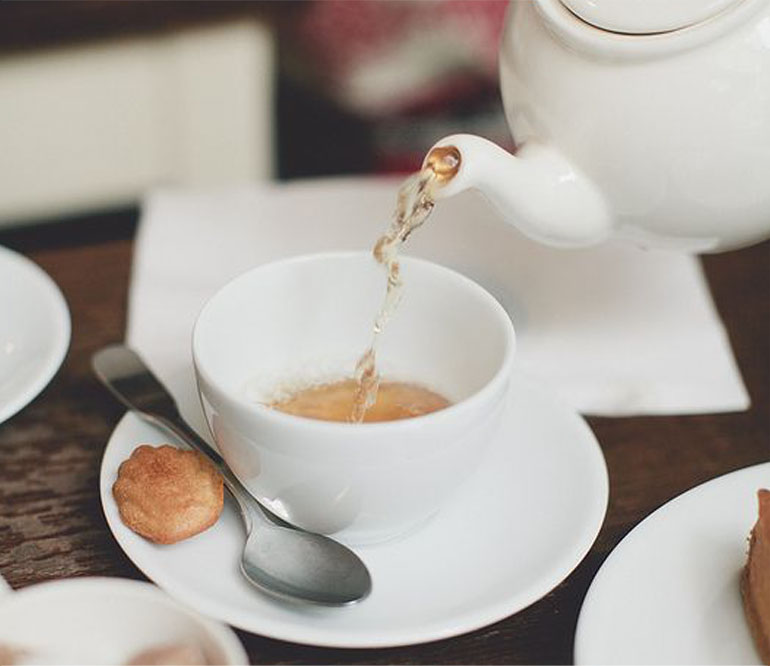
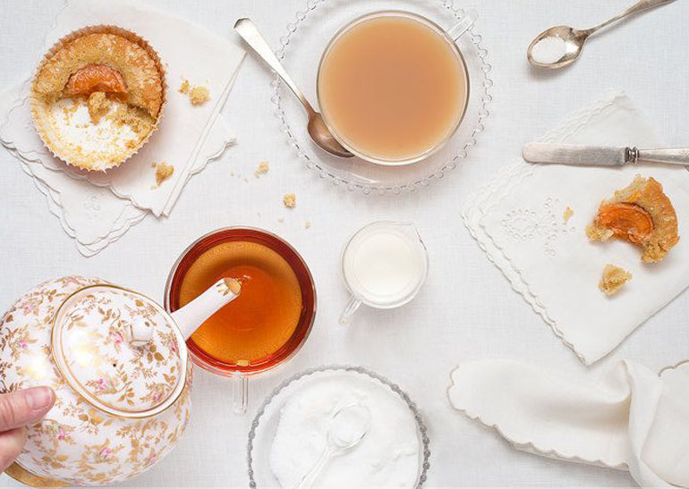

tips for how to brew tea perfectly
December 21, 2014The world of tea is derived from a single species of plant- Camellia Sinesis. However, similar to wines, the harvest, terroir and production methods greatly affect the final tea product.
The most important factor that determines a white tea versus a green tea versus a black tea is the level of oxidation of the leaves. Simply put, the higher the oxidation level, the darker and more robust the tea. Non-caffeinated teas that do not come from the Camellia Sinesis plant are normally known as fruit and herb tisanes.
category
Tea Facts
tea paring with the food you love
December 08, 2014Whilst commonly seen as a breakfast or afternoon beverage, tea can accompany most foods depending on whether it is drunk to enhance the flavour of a dish, or to cleanse the palate. Follow the tips below to find out how to appreciate tea with food.
Use all senses: smell, sight, touch, taste
Sip the tea first. Put a small piece of food in your mouth. Let the flavours develop.
As you swallow, note the aftertaste. Take another piece of food. Sip some tea and let the food and tea mingle.
Reflect on the flavours:
Was it a pleasant experience?
Did one overpower the other or was it a harmonious blend?
Did any changes in texture and flavour occur with the combination?
The most important factor that determines a white tea versus a green tea versus a black tea is the level of oxidation of the leaves. Simply put, the higher the oxidation level, the darker and more robust the tea. Non-caffeinated teas that do not come from the Camellia Sinesis plant are normally known as fruit and herb tisanes.
category
Tea Facts